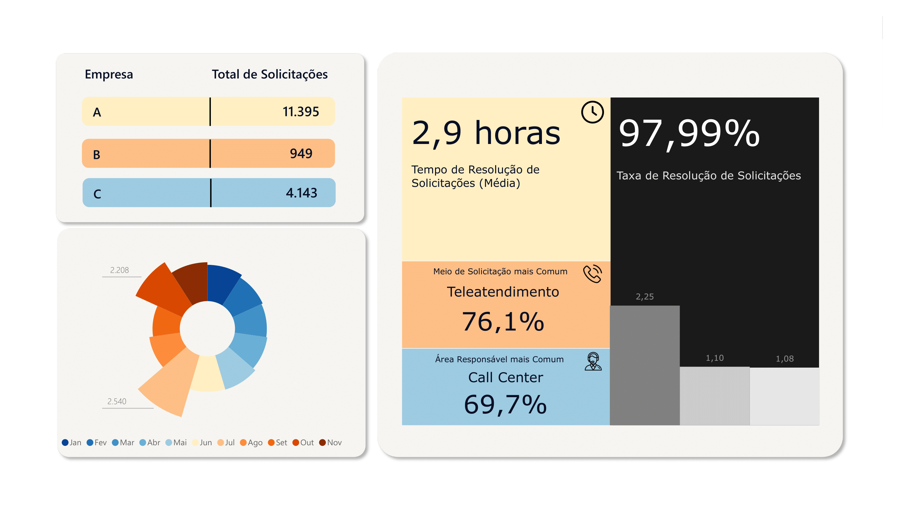

Análise executiva da performance de atendimento ao cliente

Dashboard desenvolvido para análise da performance operacional de atendimento ao cliente em múltiplas organizações.
O projeto analisou 16.487 solicitações com foco na identificação de gargalos operacionais, análise de tempo de resolução e monitoramento de indicadores de atendimento.
O dataset utilizado contém registros operacionais de atendimento provenientes de diferentes organizações.
Foram analisados 16.487 registros de atendimento.
Taxa_Resolucao =
DIVIDE([Solicitacoes_Fechadas],[Total_Solicitacoes])
Tempo_Medio_Resolucao =
AVERAGE([Horas_Resolucao])